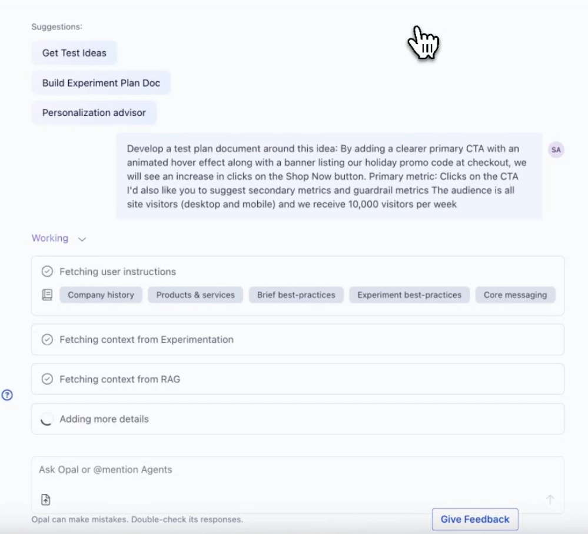

Netflix ExPlat
PM Panel Presentation
Joy Sun
Intro

Joy Sun
Product Manager · Meta
XP Background
5 years at Wayfair leading ExPlats and Quasi-experimentation for high-value business decisions
Current Focus
ML Product Manager for notification relevance
Intro
Prompt Summary
Given Key Netflix XP Challenges
1
Expertise and self-serve constraints
2
Workflow fragmentation and operational burden
3
Inconsistent rigor, guardrails, and trust
4
Extensibility and interoperability gaps
5
Weak compounding of learnings across experiments
Propose in Your Presentation
→What is your vision?
→What are the core objectives guiding your strategy?
→What are the big ideas or new directions to explore?
→How would you prioritize your ideas and why?
→Proposed roadmap and timeline
→How will you measure success?
→Potential risks and mitigations
→Go-to-market plan for internal adoption
Team
~15 Engineers · 1 Product Designer
Intro
Agenda & Approach
Topics
1
Vision: Current State vs Future State
2
Roadmap
–
XP User's Hierarchy of Needs — prioritization framework
–
P0 Investments
–
New Bets
Style
→
Since I have incomplete information, I will make assumptions visible
→
Given vague problem statements (from prompt), I'm making big assumptions on the detailed user problems (based on my experience × Netflix's scale × context from interviews)
→
More emphasis on "how I think" vs "here's the TLDR"
→
Discussion format — happy to take questions throughout
2-Year Vision
Where we are today, and where we're going.
Netflix Mission
Entertain the world through innovations on how storytelling is produced, discovered, and enjoyed
↓
ExPlat Mission
Accelerates innovation through faster, higher-confidence decisions grounded in experimentation and learnings.
↓
Faster
Reduce cycle time from idea to decision. Remove dependencies that block experimentation velocity.
More Confident
Statistically valid, reproducible results. Consistent guardrails that don't depend on team discipline.
Compounding
Each experiment makes the next one smarter. The organization remembers what it has learned.
Current State
Where we are today
Why this is changing
WHO
Personas, Ownership & Quality
Designated roles, sequential handoffs
- Designated roles with sequential handoffs (DS designs → Eng implements → DS interprets) — no one person can run the full lifecycle
- Quality depends on the expert in the loop — inconsistent guardrails across teams
Eng
DS ★ Required
Agents × domain context can supply the expertise
HOW
Interaction Patterns
Fragmented tooling across personas
- Too many tools for too many personas — setup for Eng, analysis for DS, review docs for PMs
- Test documentation and learnings are scattered across XP tooling, chats, and docs.
Workflows are rapidly moving to agents
TRUST
Result Quality & Safety
STRONG
Platform is powerful, but Quality depends on DS in the loop
- Mature product with high user-trust in statistics and data processing
- Eng/PM are not confident in test setup/interpretations without DS support
EXPANSION
Platform Extensibility
GAP
Tech debt and tight coupling block new verticals
- Tight coupling and integration patterns don't scale cleanly to new orgs (Live, Games, Ads)
The Business Is Expanding
COMPOUNDING
Institutional Knowledge
GAP
Tribal knowledge, not institutional memory
- Learnings live in people's heads, docs, and threads — not the platform
- No structured record of past experiments or decisions
2 Year Vision
Where we want to go
Risks, Tradeoffs & Dependencies
WHO
Personas, Ownership & Quality
Super ICs iterate independently with platform guardrails
- One person owns the full lifecycle: hypothesis → design → implementation → analysis → launch
Eng
DS (Consulted)
⚠ Risk
Shifting to eng-owned experimentation risks quality without safeguards. Dependent on stronger Trust investments.
HOW
Interaction Patterns
Unified workflows, agents as first-class customers
XP becomes more flexible and supports multiple access patterns — including MCPs for agents
⚖ Tradeoff
More access patterns will compete with bandwidth for UI improvements. Mitigations: XP UI development should be much faster with vibe coding.
TRUST
Result Quality & Safety
Continuous confidence at every stage
- Automated guardrails at setup, rollout, and decision time
⛓ Dependency
Must maintain trust as we shift WHO. Guardrails are the prerequisite for removing DS from the loop.
EXPANSION
Platform Extensibility
Modular platform, plug-and-play verticals
- Decoupled, composable platform — new business units plug in, not rebuild
⛓ Dependency
Tech debt and tight coupling must be resolved first. Integration patterns block modular extension.
COMPOUNDING
Institutional Knowledge
Past learnings inform future hypotheses
- Every experiment feeds the next — past learnings inform future hypotheses
- Platform retains experiment artifacts — from test design to readouts to deep dive docs
- Leadership views: org-wide experimentation health, velocity, win rates
Leadership
⛓ Dependency
Metadata incentives must come before the predictive layer. Without structured data flowing in, there's nothing to mine.
User Flow
Experimentation Lifecycle
Ideate /
Opp Sizing
Opp Sizing
→
Project
Execution
Execution
→
Experiment
Setup & Rollout
Setup & Rollout
→
Experiment Analysis
Monitoring
Analyze
results
results
[Optional]
Deep dive
Deep dive
→
Launch
Decision
Decision
→
Experiment
Cleanup
Cleanup
⚠ Highest risk (SEVs, underpowered)
Most frequent touchpoint (daily, multiple people)
1-2 days
2+ weeks
~1 week
~1 week
Where the work actually happens today:
Google Docs
Slides
Figma mocks
XP UI (daily checks)
Meeting updates w/ manual copy/paste
XP UI
Notebooks
XP UI (segmenting)
Custom SQL
Google Docs
Slides
Platform
Outside platform
Fragmented tools/artifacts
HOW
Platform Architecture Is Evolving
The UI used to be the only interface. Now the backend needs to serve humans, AI copilots, and autonomous agents equally.
Today
XP UI
Notebooks
for DS
XP Backend
Experiment Config
Joins Exposures & Metrics
Statistical Analysis
Table
Tomorrow
XP UI
Notebooks
for DS
Claude
for Engineers
AI Agent
OpenClaw on GChat
XP Backend / APIs
Experiment Config
Joins Exposures & Metrics
Statistical Analysis
Table
Roadmap & Prioritization
How we get there, given key dependencies, assumptions, and risks.
Planning
Assumptions
These shape how we prioritize. If any change, the roadmap should be revisited.
Team
- •TEMP CONSTRAINT Eng-heavy for the next year — prioritize Eng-leverage work over DS-dependent work
→ 1 DS FTE limits platform's ability for adv. capability development
- •XP team develops faster with AI — especially UI work, significantly accelerated
Product
- •TEMP CONSTRAINT Mature product with significant tech debt — tight coupling and integration patterns don't scale cleanly. ~25% bandwidth for KTLO, goal is 10%
Org & Business
- •AI adoption is high — 50%+ of users already use Claude. Expect 90%+ within 6 months
- •New verticals are strategic bets — strong push for platforms to support expansion
Framework
XP User's Hierarchy of Needs
Fix the foundation first. Then accelerate velocity. Then advance capabilities. Then build delight. Within each layer, use reach and business impact to sequence.
Delight
Advanced Capabilities
Velocity
Access & Trustworthiness
↑ Build up from the base
Unblocking new verticals
Compromise platform trustworthiness
Learnings compound
Workflow efficiency
Expertise & self-service constraints
Additional prioritization considerations
Ownership Level
Reach
Severity
Roadmap
6-Month Priorities & 2-Year Direction
Key 6-Month Outcomes:
- •KTLO 25% → 10%
- •Games, Live unblocked for core experimentation
- •Read-only APIs + platform guardrails shipped
- •Prototype org-level leadership XP
0–6 Months
6–12 Months
12+ Months
Foundation
& KTLO
& KTLO
Fix tech debt, decouple. 25%→10% KTLO
Maintenance at ~10%
Steady state
Verticals
Expansion
Expansion
↑ UNBLOCKSUnblock core XP for Games, Live
Custom methodology (if generalizable)
Custom methodology for niche
Simplify Specialized
Knowledge
Knowledge
AI-Assisted
Platform guardrails, AI experiment design
AI-assisted interpretation + deep dives
DS becomes optional
Reduce Manual
Execution
Execution
Read-only APIs, agent workflows
Write APIs, automated workflows
Fully automated lifecycle
Institutional
Knowledge
Knowledge
Prototype org-level leadership XP. Auto-cleanup + outcome collection
Leadership views, metadata incentives ↕ flywheel
Predictive layer, hypothesis surfacing
New Use Cases
via XP R&D
via XP R&D
Not prioritized — limited DS (1 FTE)
Custom methodology (if generalizable)
Niche capabilities, new experiment types
Leadership views incentivize metadata collection, which makes AI experimentation smarter. Two pull mechanisms: users contribute because AI gets better, leaders contribute because they want velocity visibility. Phase 1 doesn't replace DS — we observe it becoming optional.
EXPANSION
Expand to New Verticals
User problem: [TODO] New vertical orgs (Games, Live) can't run experiments because the platform is coupled to legacy pipelines — they're blocked from validating revenue-critical product changes.
Prioritization Framework:
- → No ready org should be blocked from core experimentation — that's a platform failure
- → Prioritize vertical work that also strengthens core — debt paydown, modularization, reduced KTLO
- → Backlog custom capabilities until core parity is achieved — only if generalizable
- → Deprioritize products not yet ready for experimentation
Layer
Reach
Impact
Unblocks
6-Month Roadmap
Unlock core experimentation via debt paydown and modularization
Decouple pipelines, modularize system. Prioritize fixes that also reduce KTLO.
Foundation
2 orgs
High
Revenue blocked
Games
Live
Onboarding support for new verticals — validate data pipelines and new users
Hands-on support to verify brand-new data pipelines are trustworthy and users can run their first experiments. Prerequisite for self-serve.
Foundation
New orgs
High
Unblocks adoption
Games
Live
Backlog
Build new capabilities for unique use cases
e.g. ultra-low latency methodology. Evaluate if generalizable to other orgs.
Adv. Cap.
1 org
Med
Has workarounds
Live
Product growth needed before experimentation
Customer base too small for valid randomization. Architect now, activate when ready.
Not yet
—
Low
Not ready yet
Ads
WHO
Rigor, Guardrails & Trust
The platform has the functionalities to enable quality experimentation — but expertise and self-service are critical limiting factors (addressed in a future slide).
Prompt — Rigor, Guardrails & Trust
As experimentation scales, safety and scientific rigor must be embedded into defaults, not dependent on best effort. Today, guardrails such as regression detection, standardized metric coverage, and clear risk visibility are not consistently adopted or enforced
↑ GTM issue
across teams and use cases. The result is uneven protection, uneven confidence in outcomes, and a natural tendency for teams to avoid experimentation for high-impact surfaces unless they have direct expert involvement
↑ expertise / self-service issue.
Initiatives
Self-Service
Detect experiment quality and make it visible throughout the experimentation lifecycle
UX
Continuous assurance: visual marker of test quality throughout the lifecycle
UX
Can't-miss key warnings — business/org-level guardrail metrics always checked and flagged
Self-Service
Increase friction to "doing the wrong thing" — e.g. launching a test that regresses org guardrail metrics <brainstorm with team>
UX
Allocation toggle to 100% is disabled for regressive tests (override needed from org POC)
Risk: if XP is overly restrictive, friction can create negative user experience
Community / GTM
Ultimately, enforcement depends on people — XP to simplify org-level approval and enforcement process
→
XP org-level view for org-owners — people who care about launches moving org goals, not just team goals
Risk: should be based on deep understanding of org patterns (assumes key POCs gatekeep launch decisions)
WHO
Reduce Specialized Knowledge to Enable DS-Optional Self-Service
User problem: Engineers and PMs can't self-serve experiments because setup and interpretation require DS expertise — creating a bottleneck that limits how many experiments the org can run.
Prioritization Framework:
- → Statistical knowledge generally takes precedence — high XP ownership (no one else will do the calculation), high reach (every experimenter, every test)
- → Domain knowledge is prioritized when it's evergreen — lower XP ownership (teams can capture in working docs), team-specific reach
- → Gaps that block teams from experimenting at all take immediate precedence — see Rigor, Guardrails & Trust
Specialized Knowledge
Data Pipeline
Strategy: seamless validated metrics onboarding, available for all to use
Users see
Drag-and-drop metric selection
Platform abstracts
• Right tables
• Metric definitions
• SQL generation
Statistical Knowledge
Strategy: encode once in the platform, everyone benefits
Users see
Experiment quality: PASS
Interpretation: green / red / gray bars
Platform abstracts
Test setup
• SRM checks
○ Power analysis
Readout
• Frequentist/Sequential methodology choice
• Winsorization
• Multiple hypothesis correction
Domain Knowledge
Strategy: make it easy for domain experts (DS, Eng leads) to onboard and set as defaults for their team to reuse
Users see
Smart defaults for their team
Teams contribute
• Goal / guardrail metrics
○ Holdouts to respect
○ Common segmentation
○ Troubleshooting patterns
6-Month Roadmap
Automate missing statistical knowledge
Power analysis recommendation — triggered at setup based on historical user population × metric variance
Improve UX signals
Stronger confidence cues: "test quality is high based on X checks", "most popular metrics for your team"
What if AI agents could be our experimentation experts? →
TODO: Agent-based automation (Claude plugins) is the solution here — it solves multiple problems at once: (1) embeds statistical + domain knowledge in one interface, (2) teams contribute domain context via MD files/skill templates, (3) this enables confident DS-optional self-service which increases quality of outcomes, (4) the automated workflow naturally captures metadata as a byproduct. One investment, multiple returns. Prove it out with XP Claude plugin first.
WHO
AI Agents as Experimentation Experts
Big idea: Build AI MCP skills across the experiment lifecycle. Teams layer domain knowledge on top via skill templates. Skills surface in both UI and Claude Code.
UI
One-click access for all experimenters
Claude Code
Engineers + team domain knowledge via skill templates
invoke ↓
XP Agent Skills — Experiment Lifecycle
Ideation
Predictive
→
Experiment Design
Insights
→
Setup & Execution
Automation
→
Monitoring
Automation
→
Analysis & Decisioning
Insights
→
Report Gen
Automation
→
Code Cleanup
Automation
This is a new bet — how do we de-risk and validate?
|
Phase 1: Automation
6-month
|
Phase 2: Insights
6-month validation, 6-12 month GA
|
Phase 3: Predictive
Future
|
|
|
User Problem
|
"Run tests faster with simplified UX — saves time, reduces SEVs"
|
"Help me design experiments and interpret results without waiting for DS"
|
"Help me surface what to test next and what context I need"
|
|
Skills
|
Setup · Monitoring · Report Gen · Code Cleanup
|
Experiment Design · Analysis & Decisioning
|
Hypothesis Ideation · Predictive Domain Context
|
|
Risk
|
Low — deterministic
|
Medium — surface-level decisioning on goal metrics is low risk, but deep analytical dives are high risk with a longer-than-6-month horizon
|
High — dependencies don't exist yet, needs predictive accuracy validation
|
|
Domain Knowledge
|
User-contributed — teams build on our plugins with their own domain context to create team-specific skills
|
Predictive — platform synthesizes context from historical experiments
|
|
|
Success Criteria
|
X% adoption rate on test execution · Time-saving estimates · DS dependency reduction from survey results
|
[TODO]
|
|
Prioritization Framework:
- → Start with low-risk deterministic agents to prove adoption and time savings — this is the zero-to-one moment
- → Insights-driven analysis and deep dives are the holy grail to unlocking DS-optional — but require two foundations from Phase 1: teams learning to build agents, and a strong domain context contribution pattern
CONTEXT
This Isn't a New Idea — It's Already Shipping in Industry
Optimizely launched AI-powered experimentation capabilities in 2026. The direction we're proposing is validated by market leaders.
What Optimizely shipped — "Opal"
Chat-interface experimentation agent with specialized sub-agents across the full lifecycle:
• Test Ideation Agent
• Opportunity Mining Agent
• Hypothesis Builder Agent
• Prioritization Agent
• Experiment Planning Agent
• Metric Blueprint Agent
• Experiment QA Agent
• Audience Targeting Agent
• Summarize Results Agent
• Experiment Review Agent
• Results Storytelling Agent
• Next Experiment Agent
What this validates for us
• The market is moving toward AI agents in experimentation
• Our advantage: deep integration with internal infrastructure + team domain knowledge via skill templates
Optimizely Opal — AI Experimentation Agent

optimizely.com/insights/blog/AI-experimentation ↗
COMPOUNDING
Unlocking Knowledge Across Experiments
User problem:
• Experimenters can't build on past learnings — repeating mistakes, rediscovering insights, designing in a vacuum
• Leadership lacks easy visibility into org-wide experimentation outcomes — win rates, decision velocity, which bets paid off. At every level, orgs spend significant time communicating readouts upward (weekly/monthly)
• Both are constrained by the same root: the platform's metadata lacks consistency
• Experimenters can't build on past learnings — repeating mistakes, rediscovering insights, designing in a vacuum
• Leadership lacks easy visibility into org-wide experimentation outcomes — win rates, decision velocity, which bets paid off. At every level, orgs spend significant time communicating readouts upward (weekly/monthly)
• Both are constrained by the same root: the platform's metadata lacks consistency
Experiments
Teams run tests
→
⚠ Metadata Gap
Post-launch decisions
ship / kill / iterate
ship / kill / iterate
Decision reasoning
buried in Google Docs
buried in Google Docs
Consistent metrics
similar metrics chosen inconsistently
similar metrics chosen inconsistently
↑
Code Cleanup Agent
↑
Report Gen Agent
XP agents bridge the gap — collecting structured data as a byproduct
→
Knowledge
Cross-experiment learnings
→
Better Experiments
Ideation, leadership views
How do we close the gap?
|
Phase 1: Organic Collection
6-month · already in motion
|
Phase 2: Leadership Views + Incentivized Collection
6-month
|
Phase 3: Compounded Learnings
12-month
|
|
|
Approach
|
"Make it so easy it happens automatically"
|
"Make providing metadata worth it"
|
"Surface learnings for experimenters and leaders"
|
|
Delivers
|
Structured metadata without new workflows
|
Simplified org-level experimentation view — velocity, what's winning, what's at risk. Leaders assess launch impact over time and portfolio ROI. An alternative to relying on teams for experimentation updates
|
Cross-experiment learnings at test setup. Synthesis feeds into leadership tool — preserving org wins and learnings
|
|
How
|
• Agents collect as byproduct — Cleanup logs decisions, Report Gen captures reasoning
• LLMs extract metadata from public chats and docs
|
• Leadership view creates pull — teams provide clean data because leadership is watching
• Platform enforces rigor — flags deviated metrics, inactive teams, tests tanking key metrics
|
• Surface learnings for experimenters and leaders
• Synthesis feeds into leadership tool
|
|
Risk
|
Low (agents) / Medium (LLM extraction)
|
Medium — need a view leadership actually uses
|
Higher — requires enough clean historical data
|
WHO + HOW
Accelerate Testing Velocity
User problem: All experimenters juggle 4+ tools across setup, monitoring, review, and launch — each handoff adds friction and delays, slowing time-to-decision and reducing experiment throughput.
Prioritization Framework:
- → Ship platform guardrails first — dependency for removing DS bottleneck
- → Invest in AI-assisted workflows that leverage Eng-heavy team composition
- → Backlog UI consolidation — workarounds exist, agent APIs compound faster
Layer
Reach
Impact
6-Month Roadmap
Automate quality guardrails at setup, rollout, and decision time
Dependency for removing DS bottleneck. Power analysis, setup validation, statistical checks baked in.
Foundation
All users
High
Unlocks WHO shift
AI-assisted experiment design and deep dives
Close the DS skill gap — AI helps engineers design experiments and interpret results. Eng-leverage work.
Velocity
All eng
High
Removes DS dep.
Expose experimentation data to agents via APIs
Let agents access our data seamlessly. Compounds as AI adoption grows.
Velocity
Growing
Early adopters
High
Compounds
Backlog
Streamline experiment lifecycle (reduce 4+ tools)
Consolidate setup → monitor → review → launch. Workarounds exist today.
Compounding
All users
Med
Has workarounds
TODO: Reframe: automating the workflow isn't just a velocity play — automating *with embedded specialized knowledge* unlocks confident self-service AND captures metadata. The "backlog" item (streamline lifecycle) becomes higher priority when framed as the vehicle for embedding knowledge + capturing metadata.
Roadmap
6-Month Priorities & 2-Year Direction
Key 6-Month Outcomes:
- •KTLO 25% → 10%
- •Games, Live unblocked for core XP
- •XP Agent Skills Phase 1 — Eng Assist shipped
- •Agents collecting metadata as byproduct
- •Prototype org-level leadership XP view
Key 6-12 Month Outcomes:
- •Phase 2 agents in validation — Experiment Design, Analysis
- •Teams building domain-specific skills via templates
- •Leadership view live — incentivized metadata
- •Platform enforcing rigor
- •Power analysis as automated guardrail
Key 12+ Month Outcomes:
- •Compounded learnings at test setup
- •DS-optional self-service for core workflows
- •Phase 3: hypothesis ideation, predictive domain context
0–6 Months
6–12 Months
12+ Months
Foundation
& KTLO
& KTLO
Fix tech debt, decouple. 25%→10% KTLO
Maintenance at ~10%
Steady state
Verticals
Expansion
Expansion
Unblock core XP for Games, Live
Custom methodology (if generalizable)
Niche capabilities
Reduce Manual
Execution
Execution
AI-Assisted
Phase 1 Eng Assist — agent workflows, APIs
Write APIs, automated workflows
Fully automated lifecycle
Simplify Specialized
Knowledge
Knowledge
Platform guardrails, power analysis
Phase 2 Insights — AI design + analysis
DS becomes optional
Institutional
Knowledge
Knowledge
Prototype leadership XP view. Organic metadata
Leadership views live, incentivized collection
Compounded learnings, predictive layer
New Use Cases
via XP R&D
via XP R&D
Not prioritized — limited DS (1 FTE)
Custom methodology (if generalizable)
Niche capabilities, new experiment types
Color intensity = team focus allocation. Foundation investment front-loaded and fades; AI-assisted capabilities ramp mid-year; institutional knowledge compounds long-term.
EXPANSION
Expand Core Experimentation to New Verticals
User problem: [TODO] New vertical orgs (Games, Live) can't run experiments because the platform is coupled to legacy pipelines — they're blocked from validating revenue-critical product changes.
Within 6 months
Foundation
2 orgs · High impact · Revenue blocked
Decouple core pipelines for multi-vertical support
Modularize metrics repo and data pipelines. Also reduces KTLO.
Games
Live
Tradeoff: parity only, not custom
Foundation
All orgs · High impact · Reduces KTLO
Deprecate legacy products blocking extension
Consolidate parallel metrics pipelines. Prerequisite for modular architecture.
Tradeoff: short-term bandwidth cost for long-term savings
2-Year Horizon
Adv. Capabilities
1 org · Med impact
Custom methodology for unique vertical needs
e.g. ultra-low latency for Live. Only after parity, only if generalizable.
Live
Tradeoff: niche unless generalizable
Delight
All future orgs
Plug-and-play onboarding for future verticals
Onboarding in weeks, not quarters. Payoff from 6-month foundation work.
Ads
Future
Dep: requires 6-mo foundation
How we sequence — and why this order
Each phase enables the next. Skipping ahead builds on a foundation that doesn't exist.
Phase 1 · Now
Automation
- Automate repetitive, well-defined tasks
- Experiment monitoring & alerting
- Review report generation
- CLI-driven launch workflows
- Dead experiment cleanup
BUILDS TRUST + ADOPTION
Phase 2 · Next
Aggregation
- Aggregate signals across experiments
- Unified results views
- AI-generated summaries
- Cross-experiment insights
- Metadata capture as byproduct
CAN'T AGGREGATE WHAT YOU DON'T COLLECT
Phase 3 · Future
Prediction
- AI-recommended experiment designs
- Outcome prediction from history
- Hypothesis surfacing
- Org-level leadership dashboards
- Proactive recommendations
WRONG PREDICTIONS ERODE TRUST FAST
AI assists
→
Captures metadata
→
Enables prediction
→
Makes AI smarter
→
Repeat ↻
TODO: Sequencing isn't strictly linear — agent-based automation (Phase 1) with embedded knowledge naturally captures metadata (Phase 2) as a byproduct. Prove it out first, then surface metadata back for compounding knowledge. One investment cascades across phases.
Initiatives across the phases
From shipped to proposed — each builds toward institutional memory.
Shipped
Automated Experiment Monitoring
750+ experiments actively monitored with configurable alerts and AI-generated result summaries.
Phase 1 · Automation
Shipped
AI-Generated Review Reports
Generate experiment review docs and decks from templates. Eliminates hours of manual copy-paste from results into slides.
Phase 1 · Automation
Shipped
CLI-Driven Launch Workflows
Full SHIP/KILL flow from the command line. Replaces multi-step manual UI workflows with a single agent-friendly command.
Phase 1 · Automation
In Progress
Dead Experiment Cleanup → Metadata Capture
AI-assisted cleanup of stale experiments. The agent asks "why was this stopped?" during cleanup — capturing decision metadata as a byproduct.
Phase 2 · Aggregation
In Progress
Unified Results & AI Summaries
Aggregate organic + ad metrics on one page. Auto-generate experiment result summaries for faster interpretation.
Phase 2 · Aggregation
Proposed
Org-Level Leadership Dashboards
Experimentation health views for leaders: decision velocity, win rates, stale drag, throughput. Creates pull incentive for metadata contribution.
Phase 3 · Prediction
The platform that remembers what it has learned
will outrun the one that doesn't.
will outrun the one that doesn't.
The question isn't whether to automate experimentation.
It's whether we capture the knowledge along the way.
It's whether we capture the knowledge along the way.